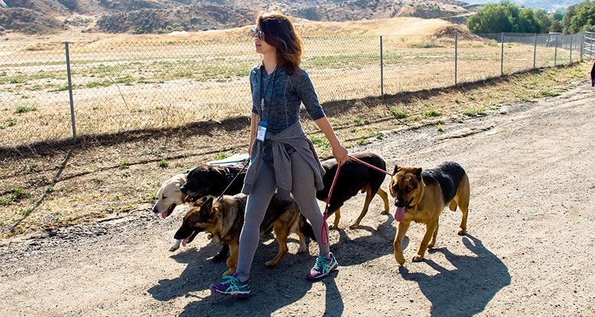
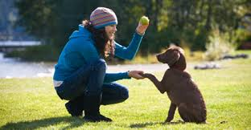

Training Programs We Provide
We have a few of the popular training method to suit your needs as an owner and your dog.
At the bottom we have listed 4 poplar dog trainings that are used today that
has benefit most of our costemers. Our professionals recommend a few training
overlapping each other as there is no best method to train your dog.
1. Alpha Dog and Dominance

This particular training is to train the dog's instinctual pack mentality by
creating relationship of appropriate submission and dominance. The theory behind
this training is to train your dog to see their family as a pack lke wolves. Dogs that
see themself as an alpha to have learn to respect their human and also learn to
submit. Methods used in this training are understanding your dog's body language
and responding accordingly,for example when your dog wants to go for a walk, your dog
have to sit patiently before the door is open and also they have to wait while you
prepare their food,etc.
With this training your dog is not allowed to go on the furniture with you and also
you are not suppose to get down to your dog's eye level, because this indicates that
you and your dog is equal in the relationship. However you are in charge and the
dominant one in this relationship, so you have to be strict and follow these rules
as a owner. Although this training is effective but it will also cause some unwanted
behaviors such as anxiousness and fearfulness. So this relationship also needs to be
reinforced which can be dangerous for children and elderly.
2. Positive Reinforcement

This training is popularized by Obama's dog trainer. The theory behind this training is
very straightforward. When your dog repeats a good behavior it is rewarded by a reward
as for bad behaviours your dog will not get a reward or acknowledgement. Harsh or physical
punishment are not needed.
After a desired behaviour is achieved a reward must be given within a few seconds. The reward is
make the dog associate the behaviour with the rewards. This training also requires you to only
give short and straight to the point commands like Sit, Stay, Come.
Everyone in your household needs to also use the same system to continue training the dog so
that the dog's behaviour is consistent. One of the problem of this training is you accidently reward
the dog when it is doing a bad behaviour.
3. Clicker Training
Clicker training can also be group as positive reinforcement but it relies on a device
to make sharp and quick noise to tell the dog that the wanted behaviour is accomplished.
The dog needs to be conditioned to hear a click noise means they will be rewarded so your dog
can associate the behavour wanted with a click and reward. Finally, you can add verbal command to create a
association. This training is also a good method to teach your dog new tricks and also more complicated
tasks. Using this method with other training will ensure you will have a well trained and well behaved dog.
4. Relationship-Based Training
Relationship-based training is a mix of different training methods, this will benefit
both dog and owner to foster communications, strengthen the bond and mutual benefits.
For this training to be effective, the owner have to know their dog's body language and
also know what rewards drives and motivates their dog the most. This method is the most deep
and meaningful bond because the owner have to figure what is the reason when their dog does not
perform a certain behaviour instead of punishing the dog. This process will take a long time
which requires the owner's patients. In any case, once this training is complete,you as an owner
will feel that you and your dog have a stronger bond and it will be very satisfying to see your own
dog behaving well and listenning to your commands.